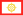

Least developed countries
{kind=link}
The least developed countries (LDCs) are developing countries listed by the United Nations that exhibit the lowest indicators of socioeconomic development. The concept of LDCs originated in the late 1960s and the first group of LDCs was listed by the UN in its resolution 2768 (XXVI) on 18 November 1971.[1]
A country is classified among the Least Developed Countries if it meets three criteria:[2][3]
- Poverty – adjustable criterion based on Gross national income (GNI) per capita averaged over three years. As of 2018[update], a country must have GNI per capita less than US$1,025 to be included on the list, and over $1,230 to graduate from it.
- Human resource weakness (based on indicators of nutrition, health, education and adult literacy).
- Economic vulnerability (based on instability of agricultural production, instability of exports of goods and services, economic importance of non-traditional activities, merchandise export concentration, handicap of economic smallness, and the percentage of population displaced by natural disasters).
As of December 2023, 45 countries were still classified as LDC, while seven graduated between 1994 and 2023.[4] The World Trade Organization (WTO) recognizes the UN list and says that "Measures taken in the framework of the WTO can help LDCs increase their exports to other WTO members and attract investment. In many developing countries, pro-market reforms have encouraged faster growth, diversification of exports, and more effective participation in the multilateral trading system."[5]
Overview
[edit]{kind=link}
{kind=link}
LDC criteria are reviewed every three years by the Committee for Development Policy (CDP) of the UN Economic and Social Council (ECOSOC). Countries may be removed from the LDC classification when indicators exceed these criteria in two consecutive triennial reviews.[6] The United Nations Office of the High Representative for the Least Developed Countries, Landlocked Developing Countries and Small Island Developing States (UN-OHRLLS) coordinates UN support and provides advocacy services for Least Developed Countries. The classification (as of December 2020[update]) applies to 46 countries.[4]
At the UN's fourth conference on LDCs, which was held in May 2011, delegates endorsed a goal targeting the promotion of at least half the current LDC countries within the next ten years.[7] As of 2018, ten or more countries were expected to graduate in 2024, with Bangladesh and Djibouti already satisfying all criteria in 2018.[8]
There is one country which presently meets the criteria and two countries which previously met the criteria for LDC status, but declined to be included in the index, questioning the validity or accuracy of the CDP's data: Ghana (no longer meets criteria as of 1994), Papua New Guinea (no longer meets criteria as of 2009), and Zimbabwe.[9]
Usage and abbreviations
[edit]Least developed countries can be distinguished from developing countries, "less developed countries", "lesser developed countries", or other similar terms.
The term "less economically developed country" (LEDC) is also used today. However, in order to avoid confusion between "least developed country" and "less economically developed country" (which may both be abbreviated as LDC), and to avoid confusion with landlocked developing country (which can be abbreviated as LLDC), "developing country" is generally used in preference to "less-developed country".
During a United Nations review in 2018, the UN defined LDCs as countries meeting three criteria, one of which was a three-year average estimate of gross national income (GNI) per capita of less than US$1,025.[10]
UN conferences
[edit].jpg){kind=link}
There were five United Nations conferences on LDCs, held every ten years. The first two were in Paris, in 1981 and 1991; the third was in Brussels in 2001.
The Fourth UN Conference on Least Developed Countries (LDC-IV) was held in Istanbul, Turkey, on 9–13 May 2011. It was attended by Ban Ki-moon, the head of the UN, and close to 50 prime ministers and heads of state. The conference endorsed the goal of raising half the existing Least developed countries out of the LDC category in 2022. As with the Seoul Development Consensus drawn up in 2010, there was a strong emphasis on boosting productive capability and physical infrastructure, with several NGOs not pleased with the emphasis placed on the private sector.[7][11]
Trade
[edit]Issues surrounding global trade regulations and LDCs have gained a lot of media and policy attention thanks to the recently collapsed Doha Round of World Trade Organization (WTO) negotiations being termed a development round. During the WTO's Hong Kong Ministerial, it was agreed that LDCs could see 100 percent duty-free, quota-free access to U.S. markets if the round were completed. But analysis of the deal by NGOs found that the text of the proposed LDC deal had substantial loopholes that might make the offer less than the full 100 percent access, and could even erase some current duty-free access of LDCs to rich country markets.[12][13] Dissatisfaction with these loopholes led some economists to call for a reworking of the Hong Kong deal.[citation needed]
Chiedu Osakwe, as of 2001 the Director, Technical Cooperation Division at the Secretariat of the WTO, and adviser to the Director-General on developing country matters, was appointed as the WTO Special Coordinator for the Least Developed Countries beginning in 1999.[14] He worked closely with the five other agencies that together with the WTO constitute the Integrated Framework of action for the Least Developed Countries. They addressed issues of market access, special and differential treatment provisions for developing countries, participation of developing countries in the multilateral trading system, and development questions, especially the interests of developing countries in competition policy.[15] At the 28th G8 summit in Kananaskis, Alberta, Canadian Prime Minister Jean Chrétien proposed and carried the Market Access Initiative, so that the then 48 LDCs could profit from "trade-not-aid".[16] Additionally, the United Nations Sustainable Development Goal 14 advocates for an effective special and differential treatment of LDCs as integral parts of WTO fisheries subsidies negotiation.[17]
List of countries
[edit]The following 45 countries were still listed as least developed countries by the UN as of December 2023:[18] Afghanistan, Angola, Bangladesh, Benin, Burkina Faso, Burundi, Cambodia, Central African Republic, Chad, Comoros, Democratic Republic of the Congo, Djibouti, Eritrea, Ethiopia, Gambia, Guinea, Guinea-Bissau, Haiti, Kiribati, Laos, Lesotho, Liberia, Madagascar, Malawi, Mali, Mauritania, Mozambique, Myanmar, Nepal, Niger, Rwanda, São Tomé and Príncipe, Senegal, Sierra Leone, Solomon Islands, Somalia, South Sudan, Sudan, Timor-Leste, Togo, Tuvalu, Uganda, Tanzania, Yemen, and Zambia.
By continent or region
[edit]There are 33 countries that are classified as least developed countries in Africa, eight in Asia, three in Oceania, and one in the Americas.
The list of "least developed countries" according to the United Nations with some that are categorized into the landlocked developing countries and the Small Island Developing States:[19]
Africa
 Angola
Angola Benin
Benin Burkina Faso[20]
Burkina Faso[20] Burundi[20]
Burundi[20] Central African Republic[20]
Central African Republic[20] Chad[20]
Chad[20] Comoros[21]
Comoros[21] D.R. Congo
D.R. Congo Djibouti
Djibouti Eritrea
Eritrea Ethiopia[20]
Ethiopia[20] Guinea
Guinea Guinea-Bissau
Guinea-Bissau Lesotho[20]
Lesotho[20] Liberia
Liberia Madagascar
Madagascar Malawi[20]
Malawi[20] Mali[20]
Mali[20] Mauritania
Mauritania Mozambique
Mozambique Niger[20]
Niger[20] Rwanda[20]
Rwanda[20] São Tomé and Príncipe[21]
São Tomé and Príncipe[21] Senegal
Senegal Sierra Leone
Sierra Leone Somalia
Somalia South Sudan[20]
South Sudan[20] Sudan
Sudan Tanzania
Tanzania The Gambia
The Gambia Togo
Togo Uganda[20]
Uganda[20] Zambia[20]
Zambia[20]
Americas
Asia
Oceania
Delisted countries (graduated countries)
[edit]The three criteria (human assets, economic vulnerability and gross national income per capita) are assessed by the Committee for Development Policy every three years. Countries must meet two of the three criteria at two consecutive triennial reviews to be considered for graduation. The Committee for Development Policy sends its recommendations for endorsement to the Economic and Social Council (ECOSOC).[23]
After the initiation of the LDC category, seven countries graduated to developing country status. The first country to graduate from LDC status was Botswana in 1994. The second country was Cape Verde in 2007.[24] Maldives graduated to developing country status at the beginning of 2011, Samoa in 2014,[6][25] Equatorial Guinea in 2017,[26] Vanuatu in December 2020,[27] and Bhutan in December 2023.[28]
The following countries are no longer categorized in the "least developed countries" group:
-  Sikkim (became a state within the Republic of India in 1975)[29][30]
 Botswana (graduated from LDC status in December 1994)[31]
Botswana (graduated from LDC status in December 1994)[31] Cape Verde (graduated in December 2007)[31]
Cape Verde (graduated in December 2007)[31] Maldives (graduated in January 2011)[31]
Maldives (graduated in January 2011)[31] Samoa (graduated in January 2014)[32]
Samoa (graduated in January 2014)[32] Equatorial Guinea (graduated in June 2017)[33]
Equatorial Guinea (graduated in June 2017)[33] Vanuatu (graduated in December 2020)[27]
Vanuatu (graduated in December 2020)[27] Bhutan (graduated in December 2023)[28][34]
Bhutan (graduated in December 2023)[28][34]
Countries expected to graduate soon
[edit]- São Tomé and Príncipe will leave the category in December 2024.[23]
- Bangladesh met the criteria twice, once in 2018 and again in 2021. The country will officially graduate from LDC status in November 2026, two years after it was supposed to, due to the COVID-19 pandemic.[35]
- Laos and Nepal will graduate in November 2026.[36] The latter was originally selected to graduate to developing country status in 2018. However, the authorities of Nepal requested to postpone graduation until 2021.[37] Graduation was later pushed back an additional five years.
- Solomon Islands will graduate in December 2027.[38]
- Cambodia met the criteria in 2021 and was originally expected to graduate in 2027, but this was later postponed to ensure a smooth transition.[39]
- Comoros, Djibouti, Senegal and Zambia could graduate from LDC status in 2027 at the earliest.[38]
- Rwanda, Uganda and Tanzania met the graduation criteria for the first time during 2023-2024. They could be recommended for graduation in 2027.[40][41][42]
- Angola was expected to graduate in 2021, but the preparatory period was extended by three years because of the economic difficulties of the country and its dependence on commodities.[43] Graduation was further postponed in December 2023, without any specific timeline.[44]
See also
[edit]{kind=link}
- Development geography – branch of geography
- Development economics – Economics of developing economies
- Economic development – Process and policies to improve economic well-being
- Extreme poverty – Condition characterized by severe deprivation of basic human needs
- Failed state – State that has lost its ability to govern
- Group of 77 – Coalition of developing countries
- Heavily indebted poor countries – IMF and World Bank classification for special eligibility
- Human Development Index – Composite statistic of life expectancy, education, and income indices
- Human Poverty Index – Former indication of the poverty of community in a country
- List of countries by GDP (PPP) per capita
- More developed country – Country with a developed economy and infrastructure (MDC), opposite of LDCs
- Newly industrialized country – Socioeconomic classification
- Right to development – definitive individual and collective right
- Third World – Geopolitical concept
References
[edit]- ^ "Identification of the least developed among the developing countries" (PDF). Archived from the original (PDF) on 2011-07-09. Retrieved 2011-01-12.
- ^ "Criteria For Identification Of LDCs". United Nations Department of Economic and Social Affairs, Development Policy and Analysis Division. Retrieved 2018-03-02.
- ^ UN-OHRLLS Criteria for Identification and Graduation of LDCs Archived 2019-07-25 at the Wayback Machine.
- ^ a b "LDCs at a Glance". Department of Economic and Social Affairs. 25 May 2008. Retrieved 2020-12-04.
- ^ "Doha WTO Ministerial 2001: Briefing Notes Least Developed Countries – Towards free market access for least-developed countries". World Trade Organization.
- ^ a b "Graduation from the LDC category". United Nations Department of Economic and Social Affairs, Development Policy and Analysis Division. 5 March 2010. Retrieved 2018-03-02.
- ^ a b "Goal to halve number of LDCs in next 10 years". The Guardian. 2011-05-06. Retrieved 2011-05-13.
- ^ Wang, Brian (11 June 2018). "Ten Fewer Least Developed Countries by 2024". nextbigfuture.com. Retrieved 21 December 2018.
- ^ United Nations (October 2018). Handbook on the least developed country category : inclusion, graduation, and special support measures (Third ed.). New York. ISBN 978-92-1-104692-2. OCLC 1088728737.
{{cite book}}: CS1 maint: location missing publisher (link) - ^ "Criteria For Identification Of LDCs". United Nations Department of Economic and Social Affairs, Development Policy and Analysis Division. 4 March 2010. Retrieved 2018-03-02.
- ^ "Least developed countries: UN conference endorses ambitious plan to lift millions out of poverty". The Guardian. 2011-05-13. Retrieved 2011-05-13.
- ^ "Public Citizen | Global Trade Watch | Global Trade Watch – Hot Issue June 21 – Study shows WTO's Doha Round proposal would leave many poor countries worse off". Citizen.org. Retrieved 2014-07-28.
- ^ "How Hong Kong Empowers Rich Countries to Choke LDCs" (PDF). Archived from the original (PDF) on 2011-04-01. Retrieved 2006-07-26.
- ^ World Trade Organization, "Moore announces key appointments for development issues", 1999 Press Releases, Press/136, 13 September 1999
- ^ Osakwe, Chiedu, "Are WTO Members wrestling an octopus, did they set their sights too high?", DAC News November–December 2005, Development Assistance Committee, OECD.
- ^ Vasil, Adria. "NOW Toronto: "Roots runs away: Beaver-clad clothier blames feds' Africa trade aid for west-end plant closure" (February 12-19, 2004, VOL 23 NO 24 Vasil)". Stage81.nowtoronto.com. Archived from the original on 2014-07-14. Retrieved 2014-07-28.
- ^ "Goal 14 targets". UNDP. Archived from the original on 2020-09-30. Retrieved 2020-09-24.
- ^ UN (2021) List of Least Developed Countries (as of 24 November 2021)
- ^ "LDCs at a Glance". United Nations Development Policy & Analysis Division. 2008-05-25. Retrieved 2019-01-03.
- ^ a b c d e f g h i j k l m n o p Also a landlocked developing country
- ^ a b c d e f Also a Small Island Developing State
- ^ "Least Developed Country Category: Bangladesh Profile | Department of Economic and Social Affairs". United Nations. 25 December 2015. Archived from the original on Mar 29, 2024.
- ^ a b "It's official and historical – three more countries will graduate from the LDC category". Development Policy & Analysis Division. United Nations. 2018-12-13. Retrieved 2019-01-03.
- ^ "UN advocate salutes Cape Verde's graduation from category of poorest States". United Nations News Centre. 14 June 2007. Archived from the original on Dec 2, 2017.
- ^ "Samoa To Gain Developing Country Economic Status in January 2014". UN-OHRLLS via Radio Australia. Archived from the original on 2015-10-17. Retrieved 2015-08-09.
- ^ "Least Developed Country Category: Equatorial Guinea Profile". United Nations Department of Economic and Social Affairs, Development Policy and Analysis Division. 2018. Retrieved 21 December 2018.
- ^ a b "Vanuatu graduates from least developed country status". United Nations Conference on Trade and Development. 2020-12-04.
- ^ a b "Bhutan graduation status". United Nations. Retrieved 13 December 2023.
- ^ "UN Handbook on the LDC Category" (PDF). Archived (PDF) from the original on 2017-02-07. Retrieved 2014-07-28.
- ^ ""About Sikkim" from the Government of Sikkim's website". Sikkim.gov.in. Archived from the original on 2009-05-25. Retrieved 2014-07-28.
- ^ a b c "Istanbul forum offers chance to recommit to helping world's poorest nations". United Nations. 2011-01-10. Retrieved 2014-07-28.
- ^ Ashton, Melanie (20 June 2012). "UN-OHRLLS Announces Samoa to Graduate from LDC Status". IISD's SDG Knowledge. Retrieved 2017-11-24.
- ^ "Equatorial Guinea Graduates from the LDC Category". United Nations. 4 June 2017. Retrieved 7 November 2017.
- ^ Mira Patel (2023-03-13). "How Bhutan graduated from the 'Least Developed Country' status". The Indian Express.
- ^ Byron, Rejaul Karim; Mirdha, Refayet Ullah (2021-02-28). "Becoming A Developing Nation: Bangladesh reaches A Milestone". The Daily Star. Retrieved 2021-08-17.
- ^ "U.N. General Assembly graduates Bangladesh, Nepal to developing countries bloc". The Hindu. ISSN 0971-751X. Retrieved 2021-11-26.
- ^ "Nepal braces for graduation from an LDC". UNDP in Nepal.
- ^ a b "Countries approaching graduation and already graduated". United Nations.
- ^ Mathew, Manoj (April 22, 2024). ""Cambodia gears up for LDC graduation challenges"". Khmer Times. Retrieved July 3, 2024.
- ^ "United Republic of Tanzania graduation status". United Nations. Retrieved 2024-06-06.
- ^ "Rwanda graduation status". United Nations. Retrieved 2024-06-06.
- ^ "Uganda graduation status". United Nations. Retrieved 2024-06-06.
- ^ "Extension of the preparatory period preceding the graduation of Angola from the least developed country category". undocs.org. 2021-02-04.
- ^ "List of Least Developed Countries (as of 13 December 2023)" (pdf). Committee for Development Policy. United Nations Department of Economic and Social Affairs. Retrieved 2024-06-21.
External links
[edit]- Office of the High Representative for the Least Developed Countries, United Nations
- United Nations List of LDCs
- Criteria for Identification of LDCs
- Fourth UN Conference on the LDCs
- UNCTAD Least Developed Countries Report (Series)
- UN LDC-IV Civil Society Forum
Economic classification of countries | |||||
|---|---|---|---|---|---|
| Three/Four-World Model | |||||
| Gross domestic product (GDP) |
| ||||
| Gross national income (GNI) | |||||
| Wages | |||||
| Wealth | |||||
| Other national accounts | |||||
| Human development | |||||
| Digital divide | |||||
| Net international investment position (NIIP) | |||||
| Authority control databases: National |
|---|